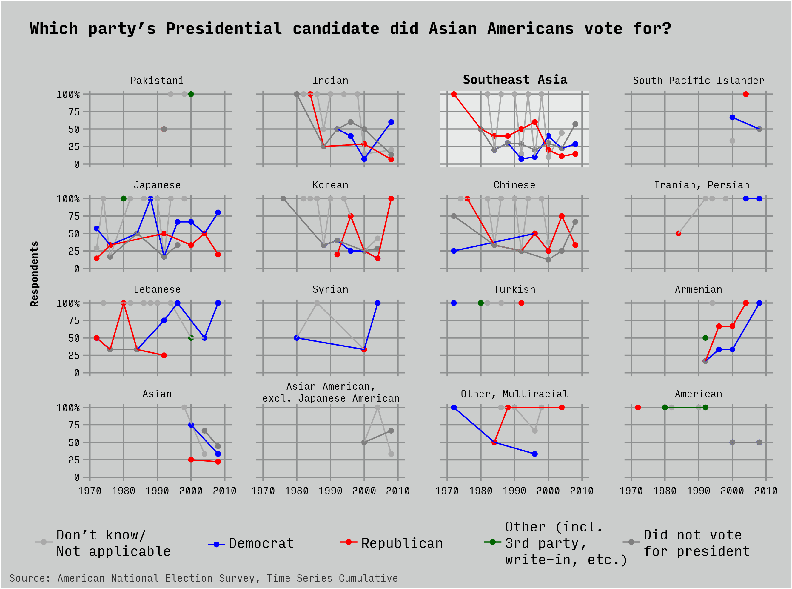

Data Visualization Project
Sam Wu
Final project for a data visualization graudate-level class at the New School
Why this data?
Some explanation
What does the data say?
Below is a look into how the Asian American community has registered and voted for national elections over time. The dataset did not include respondents from before 1966.
The most active populations are: Indian, Southeast Asian, Japanese (includes Japanese Americans).
A weakness of this dataset is the decision to group Southeast Asian respondents into a single group. This would include Philipinos, Vietnamese, Laotians, Cambodians, etc. and could be masking many of the differences between these communities.
Below is a look into the party of the presidential nominee that Asian Americans voted for.
The ANES data includes a count of how many different ways did a respondent engage during a campaign. Engagement is categorized as the following behaviors during the campaign: try to influence others, attend political meetings/rallies, work for a party/candidate, display candidate button/sticker, donate money to the party or candidate.

How did I get here?
Past charts here